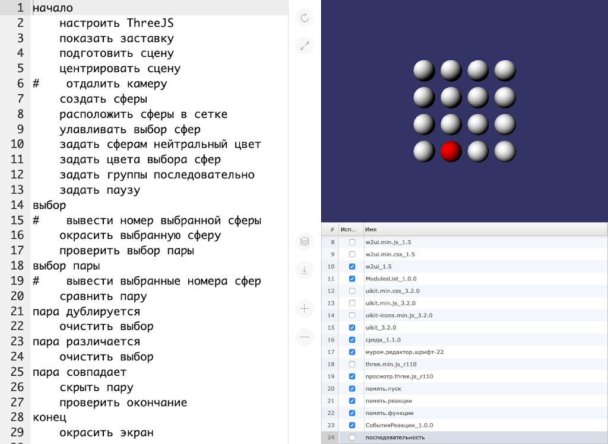

2021-01-28 00:00
In this article Michael shares his experience of creating durable applications.
In 2013 Canonical tried to crowdfund Ubuntu Edge smartphone. Its main feature could be the ability to use the smartphone as a full-fledged. . .
2020-05-03 00:00

In this article Michael shares his experience of using Git+JS.
Hi, folks, let me share my experience of creating an application to keep track of my spendings. Specifically, let me do it by answering the following questions:. . .
2020-02-12 00:00

In this article Michael shares his thoughts on teaching folks to program in 2019.
Preface
Autumn 2019 was the third time I participated as one of the teachers in the course to teach 10-15-year-old folks to program. The course took place from mid. September to mid. December. Each Saturday, we were studying from 10 AM to 12 PM. More details about the structure of each class and the game itself can be found in the 2018 article.. . .
2020-01-01 00:00

Anyone, who watches our progress long enough, can say that we restarted the development from scratch plenty of times.
Even before releasing "OGS Mahjong", we changed the underlying technology more than once. After that, we did it again several times, throwing away already completed features.. . .
2019-08-05 00:00

This article describes our first durable application for desktop PCs: PSKOV static site generator.
Durability
A durable application is an application that functions without a single change on operating systems released in years 2010-2030. In other words, a durable application has backward compatibility of 10 years and has the stability to run for 10 years. Actually, PSKOV runs even under Windows 2000, so PSKOV has backward compatibility of 19 years.. . .
2019-04-16 00:00

In this article, we describe the beginning of our efforts to protect ourselves from third-party solutions.
Since day one of Opensource Game Studio project, we rely heavily on third-party solutions to help us achieve the goal of creating the best game development tools. To this date, we used forums, task trackers, mailing lists, social networks, code version control systems, hosting providers, compiler suites, libraries, and so on. Each third-party solution we used had its own lifespan.. . .
2019-02-04 00:00

In this article, Michael shares his experience of teaching kids to program.
Here's what he covers:
2019-01-01 0:01

It was a year of reimagining and rethinking. As some of you may remember, we started this project to make a game development tool. During the years, the idea evolved from one form to another, sometimes the changes were significant, other times we threw away all the code and started anew.. . .
2018-11-19 00:00

In this article, we discuss how ideal video game and video game development tool look like, in our opinion.
Questions
As you know, the goals of Opensource Game Studio are:. . .
Page 1 of 7